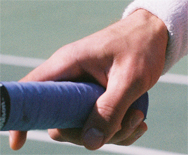

Previous: Common Pitfalls in Spanish Forehand | 🏠 Classic Lessons Home | Next: Desire and Discipline
Constructing the Kick
Comprehensive unified tennis knowledge base — Fundamentals, Stroke Analysis, Reference Library, and more
Constructing the Kick
Chris Lewit
In my first article on the kick serve, I broke down the kick motion into its important technical elements--the "building materials" so to speak. (Click Here.) Now comes the exciting part: the actual construction project! In this second article, I will describe how to take the materials and engineer a beautiful, mechanically sound kick serve--like building a house--step by step.
Building a great kick is much harder than merely accurately describing its working parts. In my experience, even with a good athlete, the entire project can take 12-24 months. It simply takes time before the serve is ready for the pressures of competition. Even after this initial mastery is achieved, there is still the need for continued refinement and maintenance.
Let's engineer a beautiful mechanically sound kick serve!
Over the course of this process, the player should go through four distinct stages. So pay close attention, hold on tight to your mouse, and here we go.

Make sure you start with a strong continental grip and a good foundation stance.

Stage 1 is the foundation in which the player masters certain beginning fundamentals. When a player first comes to me looking to learn a kick, I make sure that he has a good starting stance and a strong continental grip, as discussed in the first article.
Stage 1: First 3 Months
Laying the Foundation
Mastering Beginning Fundamentals
The TED is the foundation drill for building the kick. Note the buttstratch and the high elbow position.
The TED
From that jumping off point, with rare exception, we will work for several days up to several months on one fundamental exercise and its variations--the Triceps Extension Drill or what I affectionately like to call TED. This is Exercise One!
The purpose of the Triceps Extension Drill is manifold. Firstly, it breaks the player away from his old serve motion and the bad habits usually contained in that motion. I almost always find I need a clean slate if the player is really to practice the key technical elements for the kick. So this drill becomes the "workshop" for many of the most important beginning fundamentals of the kick serve.
The other primary purpose of the TED drill is to work on strengthening and coordinating the critical triceps snap upward to the ball. In my opinion, most players fail to master the kick serve because of failures in this critical phase of the motion. So I focus a majority of my time with a student on this area. Lastly, this drill breaks down the complicated full serve into a simpler motion. This is critical so that the student has an easier time learning and practicing the fundamentals.
As the player masters the TED move it back toward the baseline.
Steps to the TED
Here are the steps to execute the TED: The racket must be positioned in the buttscratch position and the arm and racket held down all the way down. The elbow points to the sky. This is the axis point for the triceps extension.
To create this position I like to physically manipulate the player, forcing the racket down and the elbow up to help him or her feel the depth of the buttscratch. I want the players to learn to serve from this position. This is the essence of the TED and the first building block of the kick. The player can start close to the net and, as coordination and strength develops, can take the TED back to the baseline.
Next I encourage my students to toss over the shoulder to 11 o clock. Now from the buttscratch position, they work on scraping up on the ball with the triceps and then the hand. The motion should have the shape of a fan, with a windshield wiper-like motion from left to right. During the toss, the racquet MUST stay down on the butt and the elbow MUST remain pointing to the sky until the last split second. Then the snap is executed as quickly as possible.
A common problem when learning the TED is for the elbow to drop and the racket to inch upward while the player is tossing. This ruins the benefit of the drill. Dropping the elbow causes the player to shorten the runway and practice the wrong trajectory on the upward swing.
In the TED I evaluate the status of the building blocks outlined in the first article.
Fundamental Elements
While I work on this drill with my students, I note whether they have previously attained the various elements I outlined in the first article. These elements include touching the chin with the tossing arm, good tossing technique, keeping the head still, the back arch, the shoulder tilt with hip into the court, the hip drag, the body extension, and so on. (Again, Click Here for the first article.)
If any of these critical elements are missing, I will work on them in a series of variations in the Triceps Extension Drill. I make sure they can master these elements in the TED first before we move on to Stage 2.
Shadow Snaps with or without the help of the coach develop racket head speed.
Shadow Snaps
Shadow Triceps Extension: This drill reinforces the proper form in the triceps extension. It also helps to tire out the triceps and therefore strengthen the student's ability to really snap and create racket head speed. To do the drill, the player does 5 to 10 Shadow Snaps, followed by an actual serve. These sequences of shadow snaps followed by an actual TED serve can be repeated multiple times as the student progresses.
In this drill the player learns to keep his head still throughout the swing.
Still Head
Since head position is critical in the service motion, and this is one of the key factors I look for in the TED. If the player has problems keeping his head up and eyes on the contact, I do the Head Still Drill in which the player must keep the head still throughout the swing. The player hits the ball but keeps the head in the same position as at contact. This drill is very beneficial for any player who has a problem dropping his head before contact, especially under match pressure.
The Tippy Toes Drill creates the feeling or reaching up and prepares the lower body for jumping.
Tippy Toes
The Tippy Toes Drill has two benefits. First it helps the player work on his body extension. It creates the feeling of reaching upward to the ball as fully as possible, extending the contact height. The second benefit is that the drill begins to prime the lower body for leg activation or jumping, which is a critical element in Phase 2. To do the drill the player must work from the TED but hit the ball while standing on the toes of both feet. The player then must maintain this position, standing on Tippy Toes after the hit and until the follow-through is complete - a great way to train balance.
Using the coaching cart helps players feel the torso angle at contact.
Hip Drag and Balance
The Hip Drag and Balance Drill helps players feel the proper angle of the torso at contact on the kick. By keeping the feet stable it also helps balance. As we saw in the first article, this is a critical point as many servers open the body to the net too much too soon. By keeping the right foot anchored, the player can feel how the concept of the hip drag - or how the lower body stays behind at the contact.
The High String Treatment teaches players to use spin for net clearance and to drop the ball in.
High String Treatment
The High String Treatment is an additional, great supplemental drill for Stage 1. I use the Airzone device because it is a helpful aid to learning the kick serve. (Click Here.) I have no affiliation with the company, and I usually hate gimmicks, but this tool works well as a visual aid for the player. I want my student hitting kick serves that are clearing the net by at least 3 feet with arcing topspin, and the Airzone demonstrates visually when they are able to achieve this.
Can you hit up on the ball enough to make it over the back fence?
The Back Fence
Over The Back Fence is a more extreme version of the High String Treatment. Believe me, you really have to hit up on the ball to make this work. The idea is to stand right by the back fence and hit up on the ball with enough spin to get it up and over. Another less extreme version of this is to try to serve on the court dividers on indoor courts. Those are the curtains that usually hang between the courts. Just be careful that you don't annoy the players on the next court!
The Triceps Strengthening Drill is a kick serve-specific drill.
Triceps Strengthening
The Triceps Strengthening Drill can be done with a light dumbbell, a therapy band, or even a water bottle. This exercise strengthens the muscles used in the serve motion with a sport-specific movement. By building strength in this fashion, it also helps students with the coordination and timing of the upward snap. Stay tuned for the next article with more kick serve-specific strengthening exercises.
I want the student to do literally hundreds of reps, broken down into sets that are appropriate according to age and/or current strength level. The idea is to work the triceps until the muscles are very sore. You can do it everyday with one or two days per week off.
So Be It
If all this takes several months, so be it. The time it takes to master the fundamentals in the context of the TED depends on many variables: talent, practice time per week, focus, severity of the prior bad habits, etc. But with a good athlete without ingrained bad habits, initial mastery sometimes happens in a period of mere days.
All this work is to generate Zing on the kick like the best players.is usually slow and steady, not meteoric.
But the timetable isn't the focus. Nor can the focus be on how good the end product seems, or on where the serve goes. The focus must be on the technical checkpoints. The key is understanding and trusting the system. Some players give up in this stage because they think they are not making progress. Players who focus on outcomes can get discouraged too easily because the process is usually long and difficult. Progress is usually slow and steady, not meteoric.
The holy grail of the Triceps Extension Drill is a serve that generates a high pitched "zip" or "zing" caused by the racquet strings brushing the ball for spin. The sound needs to be executed and the resulting ball must travel in a steep arc over the net.
Once the player can execute the Triceps Extension Drill flawlessly, hitting a high arcing topspin ball over the yellow string of the Airzone, while maintaining all the critical technical elements mentioned above, I move them to Stage 2.
Stage 2: 3-12 months
Completing the Framework
Linking the Fundamentals
You can start the Explosive Jump Drill from the TED, but then work it into the entire motion.
Leg Drive
The leg drive is the next critical technical element that should be introduced. The key exercise here is what I call the Explosive Jump Drill or EJD.
I recommend working on the leg drive from the TED rather than waiting until the full motion is put together to work on the jump. The reason is that many players have trouble coordinating their lower body for the jump on the serve. The TED drill simplifies the motion, letting the player focus on the jump mechanics.
I start off having the players do the jump without the ball. I focus on the distance and height of the jump and proper balanced landing kicking the right foot up and back. I want my players to "stick" the landing, like in gymnastics, and this is a great way to train dynamic balance.
Oftentimes, players will jump only off the front leg, especially players who step-up on the serve. Make sure the back (right) leg is driving in synchrony with the left. Once they can make the jump and the landing without the ball, they progress to the actual hit. The toss will have to be placed higher and farther in front to accommodate the more explosive leg drive.
You can start the Explosive Jump Drill from the TED, but then work it into the entire motion.
I like players to practice the jump about times weekly, doing 3-5 sets of 12 repetitions: They should alternate between shadow sets and sets actually hitting the ball.
The Windmill teaching fluidity and cohesive motion - by itself, or followed by a hit.
The Windmill
The next drill in Stage 2 is the Windmill, one of my favorite, classic drills for developing the kick. The windmill teaches students rhythm, fluidity, and continuous motion. It elegantly brings all the technical elements together into one cohesive working motion
I like players to practice the Windmill daily with one to two days off per week. I have my players do hundreds of repetitions until the arm and related shoulder musculature are very tired. There are many variations. For example, start with 10 shadow repetitions, then hit one serve. As the player grows stronger and more coordinated, titrate down to 5 repetitions, 3 repetitions and finally only 1 shadow repetition before the serve with ball.
Try to keep all the technical elements in check during this drill while keeping the motion smooth, flowing, and continuous. There is no use practicing this motion without hitting all the checkpoints.
The Racket Speed Drill forces players to swing faster on the kick.
If the player cannot hit all the checkpoints in the Windmill, he must spend more time in the TED to master the fundamentals. Common areas to look for problems are the L shape in the serving arm and the elbow position before triceps extension. Another problem to avoid is swinging the racquet back parallel to the baseline rather than perpendicular to the baseline.
Racket Speed
During the later months of Stage 2 racquet speed becomes extremely important to get more spin. The Racket Speed Drill is great to encourage a student to swing as fast or FASTER on the second serve than the first. Students must understand the second serve paradox: the faster they swing, the SAFER the serve will be, if they are scraping the ball.
The L Shape: The intermediate drill between the TED and the windmill.
The L Shape
For players who are struggling to get the feel of the trophy position during the Windmill, I will have them utilize the L shape drill. This is a serve that starts from the trophy position.
The L shape is the intermediate drill between the TED and the Windmill, using a half motion, which makes the technique easier to master than the full Windmill. The player starts with the racquet up, making a 90 degree angle between the upper and lower arm - the L shape or classic throwing motion.
Then the player tosses, positions the elbow and snaps from the triceps up to the ball. The key is to maintain continuity when working from the L shape to maintain the elements in the TED. The racket should move quickly and never pause in the buttscratch.
Stage 3: 12-24 months
Completing the Construction Project
Achieving Mastery
In Stage 3, I use a combination of exercises. This depends on my assessment of a player's areas of weakness. Many combinations of the Windmill, the TED, the EJD, or the other variations can be utilized as needed. You need to have a good understanding of all the technical elements and the intuition to feel what drills in what combination can help you or your player to overcome specific problems in the motion.
In Stage 3 the player should use full topspin motions on BOTH first and second serves. I STRONGLY recommend that players working on this serve hit only kick serves for the next year or even two.
Hitting variations of the kick on both first and second serves will incorporate the motion into mind and body.
In my opinion, one of the most common reasons players fail to learn the kick motion is because they try to play with the flat, slice, and kick all at once, rather than focusing on just the kick motion. The kick is so difficult to learn--there are so many technical areas to master--that rarely can a player practice a kick and then switch back and forth successfully between the other variations during a practice set, much less a match.
This is why it is so much easier and more effective for a player to use the kick on both first and second serves for many months until the motion and related mechanics are truly incorporated into the body and the mind.
This kick-serve-only developmental rule helps my students permanently assimilate the kick with little chance of reverting back to old habits. Another added benefit of forcing players to hit only kicks: they will have to learn to win with their groundstrokes rather than by banging big first serves as so many young kids (especially in the US) try to do.
In the beginning, any topspin is good topspin. As the player gets more advanced, the ability to change the type of topspin becomes important. Again, I outlined the three variations in the first article. These are what I call the Slice Topspin, the Twist, and the True Topspin. Learning the hand and wrist nuances of the slice topspin, twist, and true topspin serve is one of the final steps in truly developing the kick serve into a versatile, flexible weapon. (Click Here to read about the differences in the upward swing to produce the variations.)
Hitting variations of the kick on both first and second serves will incorporate the motion into mind and body.
Related to this is using the different variations to hit in different directions to different spots. These include pulling the opponent wide in the ad court, but also placing the ball deep and away from the player down the T in the deuce.
Stage 4: 24 months - Whole Career
Additions and Maintenance
Nuances, Embellishments, and Touch-ups
A final step, mastering the three variations in the kick.
As the player continues to develop he should always be working to develop additional racket speed to get an even heavier, higher bouncing kick.
Strengthening and Flexibility
I believe that all players who are learning a kick serve should be developing core strength and flexibility. Well respected former German National Coach, Richard Schonborn, has called this critical core area the "muscle corset." In the next article, I'll lay out the muscle corset training program my students regularly follow, along with some other important training/prehabilitation exercises that will help reduce injuries on the kick and make the serve more powerful and explosive.
But suffice it to say for now: every young player should work with a competent athletic training professional or coach to develop the critical core strength and flexibility before or concurrent with learning the kick
I have taught hundreds of beautiful kick serves by following this system. Of course, it is impossible to fully describe every possible drill variation, pitfall and error/correction in this article. But I have tried to distill my system and clearly explain the guidelines and essential exercises that have helped my students develop this difficult serve. Building a world-class kick is a challenging project but by following this system I believe just about anyone can teach or learn this serve.

Chris Lewit, former #1 for Cornell and Pro Circuit player, has coached numerous top 10 nationally ranked juniors and is a leading coach, educator, and author. He has written two best-selling books, The Secrets of Spanish Tennis and The Tennis Technique Bible.
Chris runs a popular high performance summer tennis camp in the beautiful mountains of Vermont and coaches players world-wide through his virtual school, CLTA Online (CLTA.teachable.com).
Chris also produces a weekly high performance tennis video talk show and podcast, The Prodigy Maker Show, which is available on Apple Podcasts and all other podcasting directories. All shows can be accessed at ProdigyMaker.com.
Check out Chris's blog, also at ProdigyMaker.com for free articles on high performance junior development and Spanish training. Learn about his camp at ChrisLewit.com or visit the online academy at CLTA.teachable.com

The Secrets of Spanish Tennis
What makes Spanish tennis so unique and successful? What exactly are those Spanish coaches doing so differently to develop superstars like Rafael Nadal and David Ferrer that other systems are not doing? These and other questions are answered in The Secrets of Spanish Tennis, the culmination of five years of study on the Spanish way of training by USTA High Performance Coach Chris Lewit.
Click Here to Order!
Source: tennisplayer.net archive — Constructing the Kick.docx (John Yandell teaching library, 2002-2022). Extracted and rendered as HTML for Tennis Future Lab.